Technical Report Bogx (Botanical gardens smart explorer)
- Authors
- Aflori Irina & Cotiugă Ionela
- Affiliation
- Faculty of Computer Science, "Alexandru Ioan Cuza" University in Iași
Table of contents
- Abstract
- 1. Introduction
- 1.1 Motivation
- 1.2 Purpose
- 2. Description
- 2.1 User types and features
- 2.2 Operating system
- 3. Technologies and libraries used
- 3.1 App Architecture
- 3.2 Persistent Storage System
- 3.3 REST API specification
- 4. User interface interaction
- 4.1 Landing Page
- 4.2 Favorite seasons Form Page
- 4.3 Map Page
- 4.4 Events Page
- 4.5 Join an event Page
- 4.6 Add a feedback to an event Page
- 4.7 Plant category page
- 4.8 Plants from a specific category page
- 4.9 Plant informations page
- 4.10 Add a comment/feedback to a plant
- 4.11 View all comments/feedbacks for plants
- 4.12 View taxes and services for entrance to Iasi Botanical Garden Page
- 5. Requirements and characteristics of the system
- 5.1 Functional requirements
- 5.2 Non-Functional requirements
- 6. How this solution conforms to the linked data principles
- 7. Conclusion
Abstract
This document is intended for Bogx application users and provides detailed explanations regarding how the system is structured, all of its functionalities, and the requirements that a potential client needs to meet in order to use it.
1. Introduction
1.1 Motivation
Bogx (Botanical Gardens Smart Explorer) is a Web application designed to offer users interested in the botanical field an innovative, intuitive, and easy way to access information about plants, filtered according to their own preferences, as well as a method to interact with scheduled events at the Botanical Garden in Iasi. The map of the Iasi Botanical Garden provided in the application offers an overview of the location of plants in that area.
1.2 Purpose
The main purpose of the application is to provide a digital and modern way of displaying educational information about various species of plants, allowing users to explore the Iasi Botanical Garden through an interactive map.
2. Description
2.1 User types and features
There are three types of users that can use the application: simple visitor, advanced botanist
and group of children. Users can access common functionalities, but there are also specific functionalities for each type of user.
- A simple visitor is any person who visits the Botanical Garden in Iasi and wants to find out more information about the plants present in the garden, about the exhibitions in the garden and the events organized there.
- An advanced botanist is a professional or highly knowledgeable individual with expertise in the field of botany—the scientific study of plants. He can add additional information about a plant, thus contributing to the quality of the content. It can also ensure accuracy and correctness in the description of plants. This is essential to provide users with accurate and reliable information.
- Group of children. The application can also be used by children, offering an interactive and engaging way to learn about plants. It helps children learn to identify plants through visual characteristics so that they become aware of the diversity of plants around them. The application also includes for children a quiz that tests the basic knowledge in the field of botany, facilitating the assimilation of knowledge through play.
Use Cases Diagram
2.2 Operating system
The user can use any hardware platform, respectively operating system, which allows access to one of the following browsers: Chrome, Microsoft Edge, Firefox, Internet Explorer, Safari.
3. Technologies and libraries used
- React is used for builduing the user interface, to efficiently manage the UI state, handle user inputs and update the interface in response to changes.
- Java serves as the backend programming language for the application, being well-suited for processing complex tasks, handling data, and interfacing with external APIs, contributing to the overall functionality and performance of the Bogx web application. We opted for Spring Boot, part of the larger Spring Framework as it offers a wide range of features in the development process.
- RDF is employed for representing and linking data about plants, events, markers, feedback, etc. in a semantic and structured format. It enables the creation of a knowledge graph that can be queried and analyzed for comprehensive data.
- SPARQL is a query language for RDF data. By using SPARQL queries, users can interact with the application to obtain detailed and customized information about plants, taxonomy, and other relevant data.
- Apache Jena Framework provides tools and libraries for RDF processing, storage, and querying. In Bogx application, Apache Jena facilitates the handling of RDF data, allowing for efficient storage, retrieval, and manipulation of information. We used Apache Jena Fuseki server, a popular open-source SPARQL server that provides capabilities for storing, querying, and managing RDF data.
- Taxonomies are utilized for organizing and categorizing plant information in a hierarchical manner. This hierarchical classification system helps users navigate and explore plant data more efficiently.
- Schema.org markup is incorporated to enhance the search engine visibility and understanding of the Bogx web application. It provide search engines with structured information about plants, enabling richer search results and potentially improving the discoverability of the content.
- The Google Maps JavaScript API enhances the application by providing an interactive map where users can explore the botanical garden or specific regions with visual representations on a map.
3.1 App Architecture
The diagram presented below shows the architecture of the application and how it interacts with the technologies and libraries used.
The process begins with user interaction on their device through a web browser.
The frontend application, built using React.js, handles the user interface and sends HTTP requests to the backend API.
The backend application, developed in Java, serves as the core of the application. It contains controllers for handling incoming
requests and service business logic for processing data.
The backend app interacts with a SPARQL processor. This processor is responsible for processing SPARQL
queries, initiating updates to the RDF store, and providing a comprehensive view of linked data.
The SPARQL processor facilitates changes to the RDF store, ensuring that the linked data representation is updated.
After updates are made in the RDF store, the results are communicated back to the backend Java application.
The backend app processes the results, consolidates the data from the RDF store, and prepares a JSON response.
The JSON response is then sent back to the frontend React.js application, which interprets the data and updates the user interface accordingly.
The final step involves sending the processed data back to the user's device, completing the user interaction loop.
App Architecture Diagram
3.2 Persistent Storage System
At the storage and data management level of the Web application, we chose a NoSQL database, called MongoDB. We built the data models, taking into consideration both the program's needs and a well-defined structure of the documents and how the relationships between data are represented.
The following list provides an overview of the collections required in developing the structure for the database:
- User: a collection that stores all useful information about an user (what type of user he is, what are his favorite seasons, what are his favorite categories of plants and fauna, some identification details like last name and first name).
- PlantCategory: a collection that considers the name of the plant category and a list of plants that are part of that category.
- Plant: a collection that stores the necessary details for displaying information about a plant (name, description, picture of the plant, its location, the seasons in which it appears, soil preparation, maintenance tips, description of the flowers of that plant, diseases that may appear, plant categories to which it belongs).
- FaunaCategory: a collection that considers the name of the fauna category and a list of fauna elements (different species of birds/animals/insect) that are part of that category.
- Fauna: a collection that consists of name of the fauna element, fauna category to which it belongs, a description, an image, its location and the seasons in which it appears.
- Event: a collection that stores all the events organized in the Botanical Garden. An event is defined by a name, a description, the start time and the end time of the event, the date on which the event takes place, the people who registered for the event and any feedback comments that are offered to the event.
- Feedback: a collection that is used for an event. A feedback contains a comment, a picture, and the author who made the comment.
- MapMarker: a collection that stores all the markers that are displayed on the interactive map, having a district, some coordinates values, and what type of marker it is.
- Tax: a collection used to display all taxes and services available for visiting the Botanical Garden, specifying the price and what type of tax it is.
Database Diagram
3.3 REST API specification
The REST API specification for Bogx web application, was created using Swagger and adhering to
the OpenAPI 3.0 standard. The REST API specification serves a pivotal role in enabling effective
communication between the frontend React.js application and the backend Java application. It defines the
endpoints, request-response formats, and the underlying data structures, providing a standardized interface
for interaction.
The "/plants/categories" endpoint is used for retrieving and showcasing plant categories
stored in the database. Users can explore diverse plant categories and make selections to view associated
plants within their chosen category.
Endpoint URL:
- Path: /plants/categories
HTTP Method:
- GET - Returns all plants categories that exist in the database.
Parameters:
- No parameters.
Responses:
-
Success Responses: 200 OK - Successful retrieval of plant categories.
Example value:[ { "id": 1, "name": "Roses", "plants": [ { "id": 1, "speciesCategory": [ "string" ], "plantName": "Rosa 'Flower Carpet Red'", "description": "A great deciduous ground cover rose which forms low mounds of growth to around 70cm tall and 1m wide.", "flowersDescription": "Small flowered groundcover rose which produces small single deep red flowers with yellow centre in clusters throughout spring and summer. Foliage is dark green and glossy and is often tinged red when it first unfurls. It matures to dark green with burgundy edges.", "site": "This rose will perform at its best in full sun with moist but well-drained soil but will tolerate part shade. Good air circulation helps prevent pests and diseases. Drought tolerant once established.", "maintananceTips": "The first summer and autumn after planting is critical for young plants; water thoroughly during dry periods. A good rule of thumb is to give your roses one deep watering each week in dry times this will ensure the roots look for water themselves.", "diseases": "This flower carpet rose has good resistance to the common rose diseases. However, it may still be affected by black spot, aphids and powdery mildew.", "soilPreparation": "Always choose healthy well grown plants and plant after autumn rains as the soil is moist and warm and allows plants to become established before winter. This enables them to withstand dry periods during the following summer.", "seasonOccurrence": [ [ "SPRING", "SUMMER", "AUTUMN", "WINTER" ] ], "plantPhoto": "string", "location": "Iasi Botanical Garden" } ] } ] - Error Responses: 404 Not Found - Plants categories not found.
4. User interface interaction
In this section, we will detail the most important pages of our application, creating a small guide for users.
These are some of the initial mockups created with the help of the Figma tool:


4.1 Landing Page
The main page, the entry point into the application, offers the user the possibility to start navigating our website. The users will click on the "Start your experience in our application" button, and then they will be redirected to the next page.
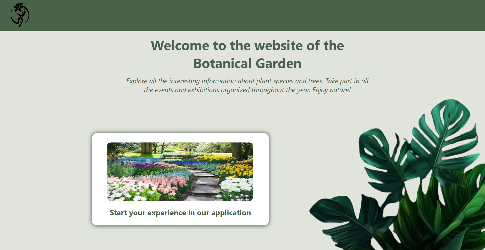4.2 Favorite seasons Form Page
On this page, the user selects their favorite seasons to filter all the plants species based on these choices. The user can check from one season to all the seasons displayed. This page features a static horizontal header at the top containing the logo and the main menu of the website.
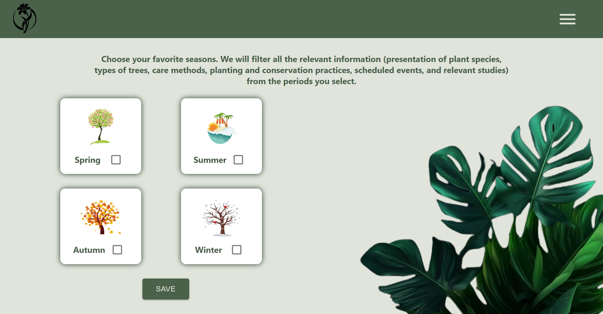4.3 Map Page
This page illustrates the interactive map of the Botanical Garden in Iasi. Users can see the geographic coordinates of every clicked point on the map.
On the left side, users can visualize and track areas marked with a specific marker to locate them more easily. Every plant species has a marker with an intuitive image (for example, the chrysanthemum plant species has as marker-icon a chrysanthemum image).
On the right side, it is illustrated the directions - route functionality. Users can select a route from the entrance of the Botanical Garden to a chosen species of plant. By clicking the "Show route" button, the user can select a specific marker and the route will be displayed. After exploring the route, user can click "Clear route" button and the map will be recentered to the initial position.
4.4 Events Page
The events page is divided into two categories: a list of scheduled events that will take place in the near future and a list of events which have already taken place. Therefore, users can see what types of events are organized at the Iasi Botanical Garden and can plan to participate in them. The types of organized events may include guided tours, exhibitions for certain plants, seasonal exhibitions, nature conservation events against pollution, events that teach how to plant or classify different types of plants, caring for the animals in the Botanical Garden, and more.
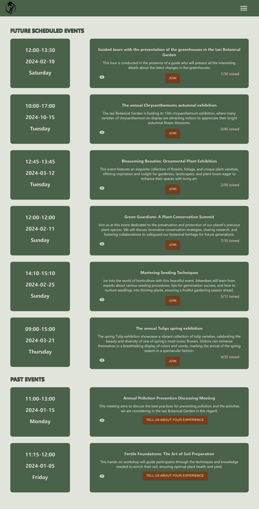4.5 Join an event Form
Users can fill out a form with their names to participate in a specific event. Generally, events organized in the Iasi Botanical Garden have a limited number of spots available. Therefore, registering for events through our application ensures an easy way to create a list of attendees, avoiding potential queues. Users can access this form by clicking on the 'Join' button attached to each event.
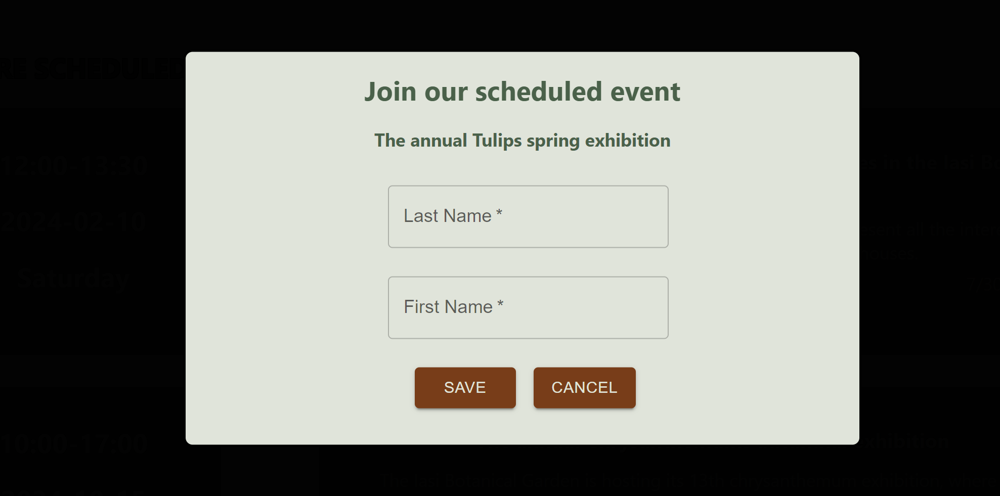4.6 View persons who joined an event
For each future event, a table with the names of the people who have joined is available. This table is useful both for checking if a person who has registered appears in the table, and for transparency in filling the available spots for each event.
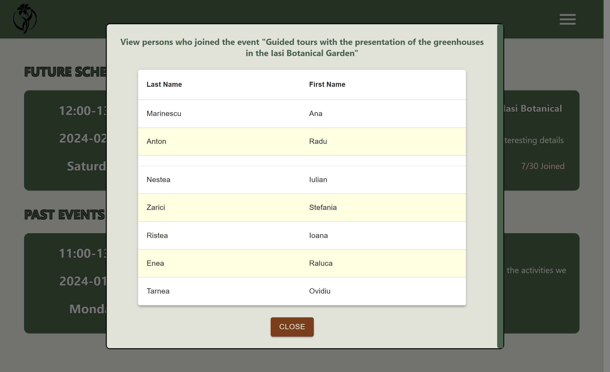4.7 Add a feedback to an event Page
Users can give a feedback for a past event they attended by filling out a form with their name and desired comments. This form can be accessed by users by clicking the 'Tell us about your experience' button available in the box of each past event.
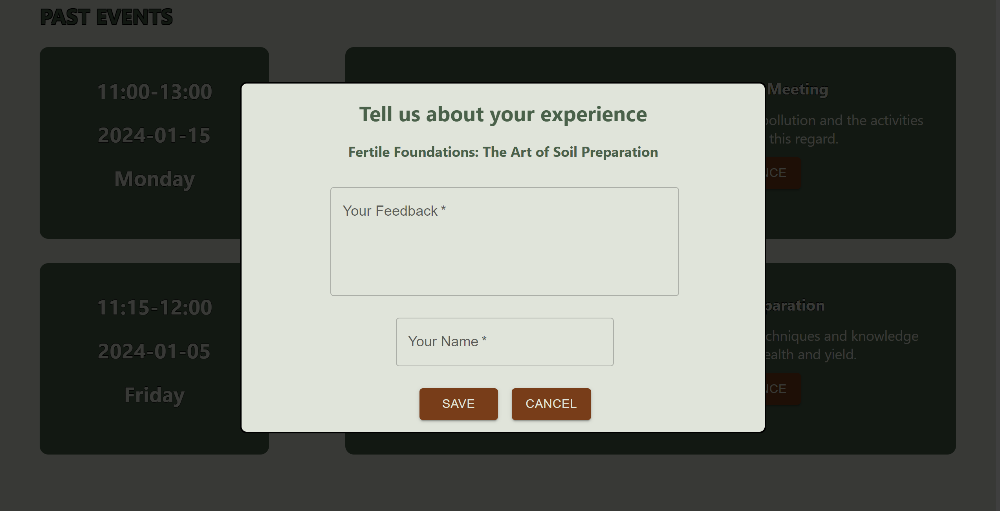4.8 View feedback for an event
For each past event, the user can access a feedback list, where they can view all the comments and opinions of people who have participated in that event.
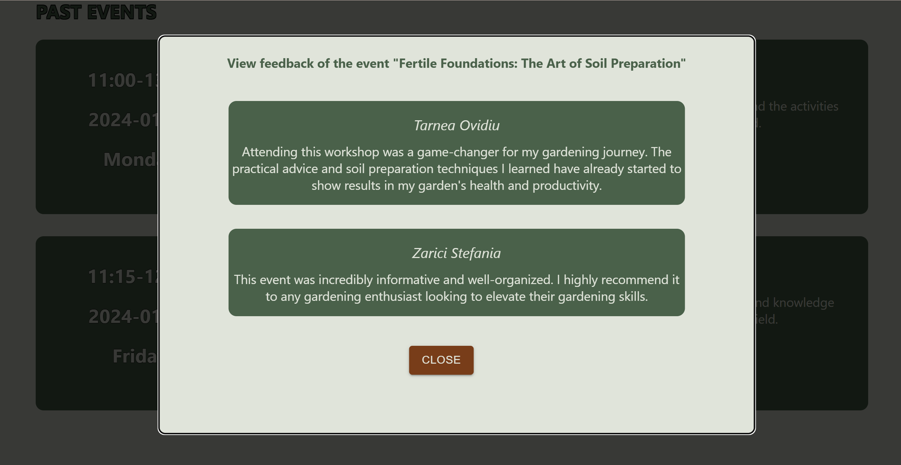4.9 Plant category page
The Plant Category Page offers a curated display of diverse plant species. Users can effortlessly explore each category, gaining insights into species details and each plant belonging to that category. The plant species are filtered according to the recommendations resulting from the user completing the form with the selection of the desired seasons. Among the plant species found in the Botanical Garden of Iasi are Rose, Chrysanthemum, Medicinal Plants, Pine, Tulip, Deciduous, and others.

4.10 Plants from a specific category page
This page displays all plants from the specific plant species. After selecting a plant species, users can view a list with the name and the image of every plant. For example,for the plant species Roses, we displayed more than 60 plants. Some of the plants are Garden Roses, Rosa agrestis, Rosa banksiae, Rosa carolina, Rosa persica and others.

4.11 Plant informations page
This page displays information about a specific plant such as: the scientific name, the family it belongs to and specific characteristics such as maintenance and growth, pests and disease, flowers and foliage and the location of the plant in the botanical garden. In this way, the user can view each plant and its characteristics.
4.12 Add a comment/feedback to a plant
This form is accessed from the details of a plant and offers users the possibility to add a comment and a picture for this plant.
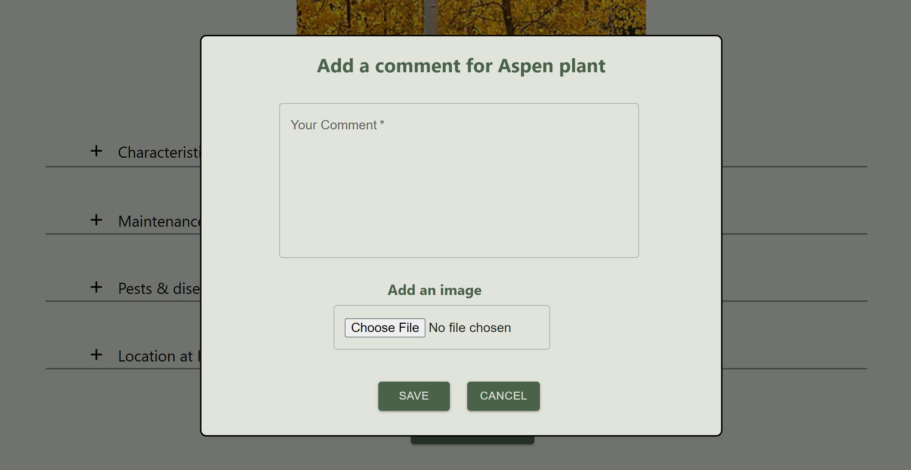4.13 View all comments/feedbacks for plants
This page displays all comments and feedback provided by a user for plants. In this way, a clearer overview of the Iasi Botanical Garden and the plants found in it can be visualized.
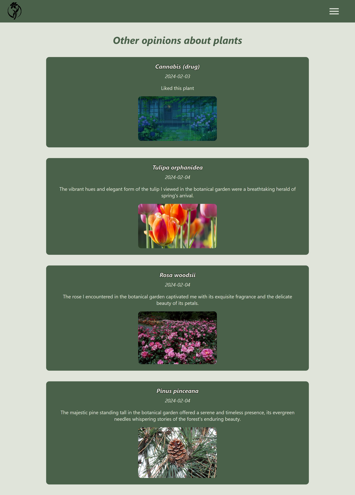4.14 View taxes and services for entrance to Iasi Botanical Garden Page
This page displays the list of fees and services necessary to be known by people who wish to visit the Botanical Garden for various purposes (whether it's attending events, visiting plants, having a photo session, etc.).
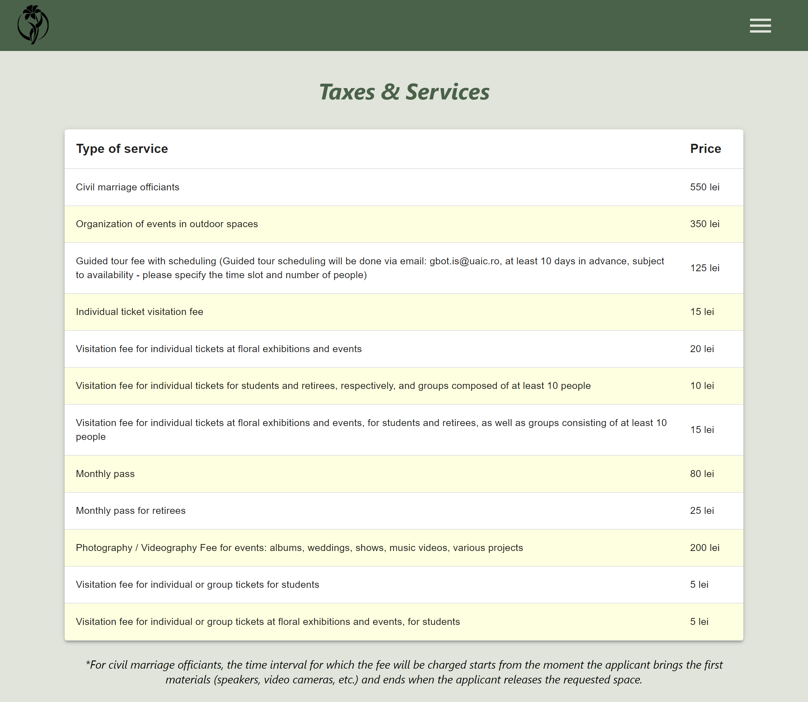5. Requirements and characteristics of the system
5.1 Functional requirements
To better illustrate the functionalities of the Bogx application, we have created an app flow diagram, which presents the navigation possibilities available to a user when accessing our system.
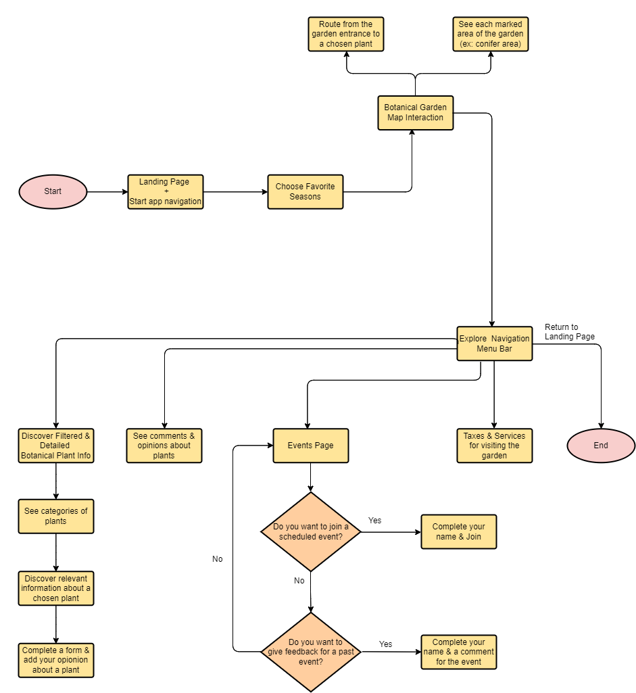5.1.1 Choosing favorite seasons
It allows the user to select their favorite seasons (the seasons of interest to them) in the context of filtering data based on these seasons. Consequently, the user will have access to read detailed information about plants associated with a particular season. To submit the form and proceed to the next page, the user needs to select at least one option from the four provided.
5.1.2 Visualization of the map of the Iasi Botanical Garden
The user has access to the interactive Google Maps of the Botanical Garden in Iasi, in order to visualize each area of interest within it. This way, they can explore and digitally locate specific plants, areas where certain insects are found, a greenhouse, etc.
5.1.2.1 Access a route to a selected plant
To accurately locate a specific plant within the Iasi Botanical Garden, users can access the application to show them the route from the entrance of the Botanical Garden to the plant marked on the map that they want to see.
5.1.2.2 View marked areas on the map
All plant categories will be displayed on the map with specific markers for better visibility and organization. For example, the pine zone will have a marker with an icon or suggestive image of pine plants. By clicking on a marker, the user will be able to read the geographic coordinates of the marker.
5.1.3 Consult the list of taxes and services for visiting the Iasi Botanical Garden
All details regarding the pricing options for visiting the Iasi Botanical Garden can be accessed by users on a separate page. For instance, users can find information about prices for viewing an exhibition, visiting the greenhouses, participating in a pollution prevention event.
5.1.4 View the events page
Users can navigate to the Events Page to explore a comprehensive list of past, and upcoming events within the botanical garden. The page provides a visually engaging display of event details, allowing users to stay informed about the diverse activities and programs hosted by the garden.
5.1.4.1 Add feedback to a past event
For users who have attended past events, the platform offers the capability to provide feedback. This subfunctionality enables participants to share their thoughts, to add a comment, and suggestions regarding specific events. Adding feedback contributes to the improvement of future events and enhances the overall engagement of the botanical garden community.
5.1.4.2 Registration for participation in a scheduled event
The platform facilitates seamless event participation by allowing users to register for scheduled events directly from the Events Page. Users can access event details, such as date, time, and activities, and complete a registration process to secure their spot.
5.1.5 View plant categories
This functionality provides users with an organized and visually appealing presentation of diverse plant categories within the botanical garden. Users can navigate through the interface to explore various categories, each offering a curated collection of plants. By clicking on one of the displayed categories, the user will be redirected to a page that displays the plants included in the chosen category.
5.1.6 View details about a chosen plant
By selecting an individual plant, users can access detailed insights into its species, care tips, growth patterns, and unique characteristics.
5.1.7 Add a comment/feedback to a specific plant
In the page with the detailed information about a specific plant, users can access (at the bottom of the page) a button "Add comment", completing a form with a comment and an image. In this way, a variety of information and opinions about different plants will be available, directly from people who have been to the botanical garden.
5.1.8 View list with all comments and opinions for plants
Users can access a page with a lot of comments and images specific for different plants. As a result, they will be able to look for opinions for an interesting plant for them. It can be important to have access to the opinions of other people, in order to create an overall picture for the field you are looking for.
5.2 Non-Functional requirements
Striving to create a web application that meets the standards of any user, we have considered several important quality attributes aimed at delivering the expected performance. We searched a solution that is efficient both in terms of time, providing quick responses to various requests, and in terms of costs. In the following sections we detail some important non-functional requirements of the Bogx application.
5.2.1 Portability
The application can be launched from multiple operating systems and various devices (it is designed as a responsive Web application), proving its portability.
5.2.2 Scalability
The increase in customer requests and the development of data volume maintain the program's performance consistently, offering the same response time through a Load Balancing process, where workload distribution across multiple resources is improved for effective instance management. This aspect demonstrates the scalability of the system.
5.2.3 Usability
The application also focuses on the user interface, ensuring that it is user-friendly, intuitive, and accessible to its intended users.
5.2.4 Performance
The application is characterized by the responsiveness, speed and efficiency of the system in different tasks or conditions. This includes response time, throughput and resource usage. These aspects are very important because impacts user satisfaction. Users expect web applications to load quickly and respond promptly to their interactions.
6. How this solution conforms to the linked data principles
- Utilizing Semantic Web technologies, including RDF, SPARQL, and OWL, to convey information.
- Utilize RDF (Resource Description Framework) to represent data in a graph format. Apache Jena provides APIs for creating, parsing, and working with RDF data. Also, SPARQL (SPARQL Protocol and RDF Query Language) is used for querying and retrieving data from RDF graphs.
- Each resource in the system has a unique URI (Uniform Resource Identifier) that can be used to access and reference that resource.
- Bogx application creates links between related resources by using RDF properties to establish relationships. Apache Jena supports linking and navigating between interconnected resources.
- Use Apache Jena's serializers to output RDF data in RDF/XML format.
In the context of Bogx application, we used DBpedia as a relevant source of information: all plant species and all plants from every species have data description from DBPedia.
7. Conclusion
The presented application named "Botanical Gardens Smart Explorer" proposes an interesting idea of displaying and interacting with the environment of the Botanical Garden in Iasi. It aims to facilitate the process of information and documentation, creating an optimal environment to delevop a passion for botanical gardens' cartography. The most important functionalities of the application include the use of an interactive map of the Botanical Garden, accessing and participating in organized events, and presenting information (filtered according to user preferences) about plants. The technologies used in the system are modern and aim towards developing a project that is portable, secure, and high-performing.
Being an application about botanical gardens' cartography, it could be improved and expanded by adding new functionalities. As future directions, we have considered implementing a method to enhance the app's accessibility by providing features for users with disabilities, such as audio descriptions, text-to-speech, or larger font options. Also, we would like to introduce support for multiple languages to cater to diverse visitors and tourists who speak different languages. An interesting idea is the implementation of a system of plant identification: a functionality that employs image recognition technology where users can take photos of plants, and the app identifies and provides details about them. Also, it would be a good idea to add a chatbot that can assist users in querying plant information, provide tips on gardening, or answer specific questions. Another wonderful idea is to display diverse fauna categories within the botanical garden, offering a curated collection of animals and other fauna inhabiting the garden. By selecting an individual element, it will be nice to access detailed information about its species, behaviors, habitat, and unique characteristics.